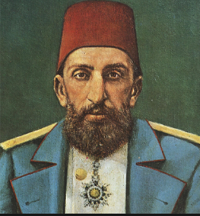

Abdul Hamid II, Ottoman Caliph,Amir al-Mu'minin,Custodian of the Two Holy Mosques (21 September 1842 -10 February 1918) was the 34th sultan of the Ottoman Empire, from 1876 to 1909, and the last sultan to exert effective control over the fracturing state.Abdul Hamid ascended the throne after his brother Murad was deposed on 31 August 1876. He became the sultan at a very difficult time. But by the mercy of Allah , he became a successful sultan.
Unlike many other Ottoman sultans, Abdul Hamid II visited distant countries. In the summer of 1867, nine years before he ascended the throne, he accompanied his uncle Sultan Abdul Aziz on a visit to Paris (30 June - 10 July 1867), London (12-23 July 1867), Vienna (28-30 July 1867), and capitals or cities of a number of other European countries.
Abdul Hamid did not believe that the Tanzimat movement could succeed in helping the disparate peoples of the empire achieve a common identity, such as Ottomanism. He adopted a new ideological principle, Pan-Islamism; since, beginning in 1517, Ottoman sultans were also nominally Caliphs, he wanted to promote that fact and emphasized the Ottoman Caliphate. Given the great diversity of ethnicities in the Ottoman Empire, he believed that Islam was the only way to unite his people. Pan-Islamism encouraged Muslims living under European powers to unite under one polity. This threatened several European countries: Austria through Bosnian Muslims; Russia through Tatars and Kurds; France and Spain through Moroccan Muslims; and Britain through Indian Muslims.[30] Foreigners' privileges in the Ottoman Empire, which were an obstacle to effective government, were curtailed. At the very end of his reign, Abdul Hamid finally provided funds to start construction of the strategically important Constantinople-Baghdad Railway and the Constantinople-Medina Railway, which would ease the trip to Mecca for the Hajj; after he was deposed, the CUP accelerated and completed construction of both railways. Missionaries were sent to distant countries preaching Islam and the Caliph's supremacy.[31] During his rule, Abdul Hamid refused Theodor Herzl's offers to pay down a substantial portion of the Ottoman debt (150 million pounds sterling in gold) in exchange for a charter allowing the Zionists to settle in Palestine. He is famously quoted as telling Herzl's Emissary, "as long as I am alive, I will not have our body divided; only our corpse they can divide."[32] Pan-Islamism was a considerable success. After the Greco-Ottoman war, many Muslims celebrated the Ottoman victory as their victory. Uprisings, lockouts, and objections to European colonization in newspapers were reported in Muslim regions after the war.
Abdul Hamid wrote poetry, following in the footsteps of many other Ottoman sultans. One of his poems translates thus: